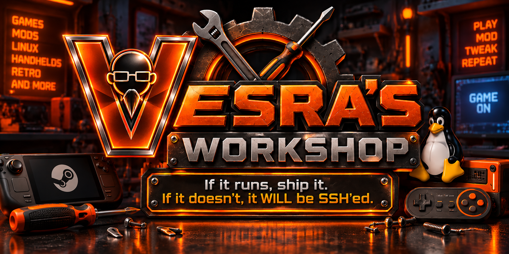

FEATURED PROJECT
Pix'n Portal Launcher
A Batocera/RGS ports-menu launcher for Team Pixel Nostalgia's Pix'n Portal. Built to get from EmulationStation to the portal without turning the handheld into a desktop project.
BATOCERA • LINUX • HANDHELDS • SSH
If it runs, ship it.
If it doesn't, it WILL be SSH'ed.

BUILT IN THE WORKSHOP
Launchers, scripts, Batocera experiments and fixes that made it off the bench.
A Batocera/RGS ports-menu launcher for Team Pixel Nostalgia's Pix'n Portal. Built to get from EmulationStation to the portal without turning the handheld into a desktop project.
The full Batocera/RGS launcher build, including the extra desktop-tool option for systems that want it.
The lean handheld build: portal launcher, browser handling, and the pieces needed to get straight to the content.
A Ports-menu launcher that gets qBittorrent open without taking the long way through Batocera's F1 desktop.
Project pages here explain what each build does; the repositories hold the actual files, updates, and documentation.
TEST IT.
→BREAK IT.
→SSH IT.
→SHIP IT.
NOTES FROM THE BENCH
The useful part of the troubleshooting: what worked, what failed, and the commands worth keeping.
Remote access, file permissions, package layouts, shell commands, and fixing things without leaving EmulationStation.
Custom runners, prefixes, Windows game folders, launch targets, and getting stubborn titles to behave.
Libraries, wrappers, launch scripts, environment variables, and keeping native builds native whenever possible.
SHIP IT
The website points to the source. GitHub stays the home for project files and releases.
ABOUT THE WORKSHOP
Vesra's Workshop is a home for Batocera experiments, handheld projects, launchers, ports, guides, and whatever else survives the SSH treatment.
The rule is simple: test on the bench, keep what works, document it, and ship it.